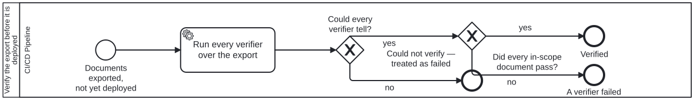

Generated from
cat-harness/processes/sdlc/publish-verification.bpmnbygen-processes-viz.ts— do not edit here. All processes
Process_PublishVerification · strict · 1 step(s)
Run the verifier set over the built tree between the export and the deploy, blocking it: pass, fail or could-not-tell, and the caller deploys only on a pass. Bean vigi, owner 2026-09-23: a set of post-processing tools that verify what the build produced, run BEFORE deployment and blocking — “a failure triggers an alert to the publisher manager”. This process only verifies and says how it went; the caller (docs-site-publish) blocks the deploy on anything but a pass and routes the failure through Process_PublishAlert, the one alert every step after the publish button shares.

publish-verification skill without calling this process: Alert the publication manager — activity-calls-skill-process asks whether each should be a call activity.| lane | role | what it does here |
|---|---|---|
| CI/CD Pipeline | build-pipeline |
Runs every verifier over the exported documents before anything is deployed, and reports pass, fail or could-not-tell. It decides nothing about the release: the caller blocks on anything but a pass. |
Every one of the 1 step(s) is documented.
| step | lane | skill / sub-process | what it does |
|---|---|---|---|
Run every verifier over the exportA_Verify |
CI/CD Pipeline | publish-verification |
Run the verifier set (scripts/publish-verify.ts, bun run cat publish:verify -- --dir <site>) over the built tree. A SET: each verifier is one entry, and adding one changes nothing else. The first is JSON-LD expansion under a real processor, network refused — a property the context does not declare, a relative IRI or a context that will not load is a finding. Only documents of OURS are verified; third-party data in the tree is counted and cannot block. |
Every one of the 2 decision(s) is documented.
| decision | what decides it | branches |
|---|---|---|
Could every verifier tell?GW_Determined |
Answered by the verifier set’s exit code. no (exit 2 — nothing to verify, or a verifier could not run) ends as could-not-verify, which the caller treats as a failure: an unverified release is not a verified one. yes asks whether everything passed. |
no → Could not verify — treated as failed yes → Did every in-scope document pass? |
Did every in-scope document pass?GW_Pass |
Answered by the findings. yes (exit 0) ends verified and the caller deploys; no (exit 1) ends failed, and the caller blocks the deploy and alerts the publication manager with the report. |
yes → Verified no → A verifier failed |